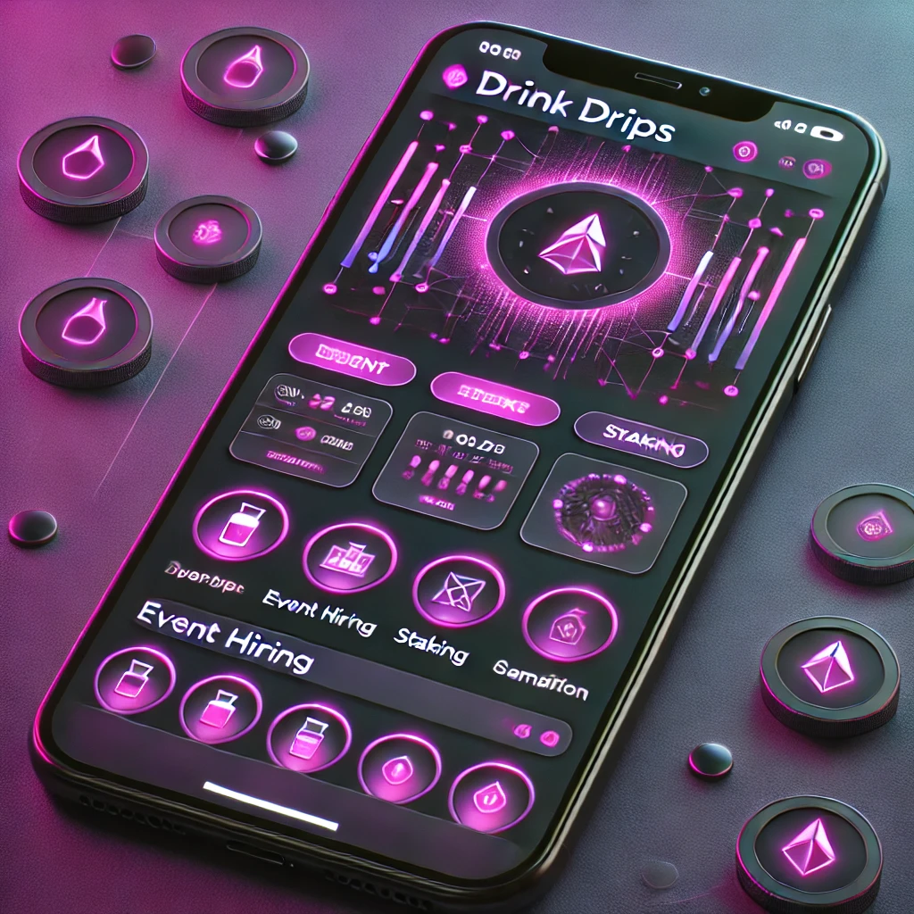

Uma nova temporada está a começar
Eventos que ficam contigo.
A DrinkDrips aproxima pessoas, criadores e experiências que merecem ser vividas — do primeiro convite ao último brinde.
- 01 Feita para pessoas
- 02 Transparente por defeito
- 03 Sem fricção desnecessária

PRÓXIMA EXPERIÊNCIA
O lugar certo
para acontecer.
estar presente
Porque sair importa
Menos passos.
Mais presença.
Não acreditamos que uma grande experiência deva começar com dez separadores, formulários confusos e uma caixa de entrada cheia. A DrinkDrips reúne o essencial, no momento certo.
- 01
Descobre
Encontra propostas feitas para os teus interesses, a tua cidade e o teu ritmo.
- 02
Entra
Uma experiência clara do preço ao acesso, sem obrigar ninguém a aprender uma tecnologia nova.
- 03
Continua
Leva contigo as pessoas, os momentos e os benefícios que fazem sentido depois do evento.
Para quem faz acontecer
O teu evento merece uma casa à altura.
Uma plataforma pensada para transformar a energia de uma ideia numa experiência real, vendável e bem acompanhada.
- Uma página de evento que dá vontade de dizer “vou”.
- Informação, acesso e comunicação organizados num só lugar.
- Relações que não terminam quando as luzes se apagam.
O nosso ponto de partida
“A melhor tecnologia é a que abre espaço para o que realmente importa: as pessoas.”
Começamos por resolver problemas humanos. A tecnologia entra quando torna uma experiência mais segura, mais simples ou mais justa — nunca apenas para fazer barulho.
Conhecer os pilotosPrimeiros eventos, de perto
Vamos criar algo
memorável?
Estamos a preparar os primeiros pilotos DrinkDrips com organizadores que querem construir experiências mais próximas, mais claras e mais humanas.
Quero falar sobre um evento Sem compromisso. Começamos por ouvir a tua ideia.